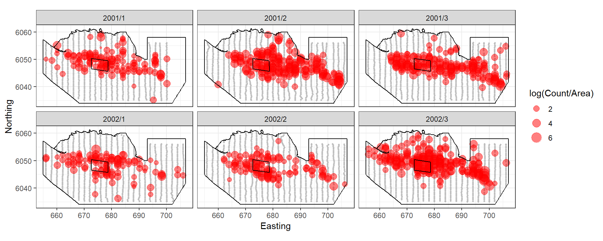
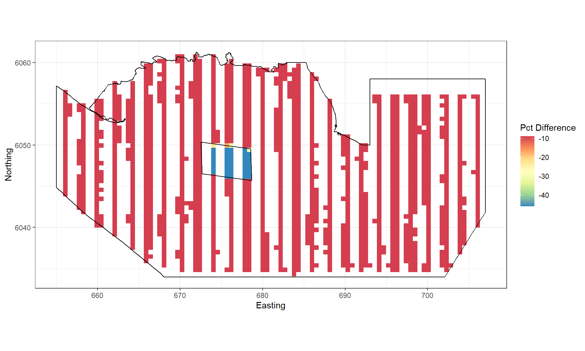
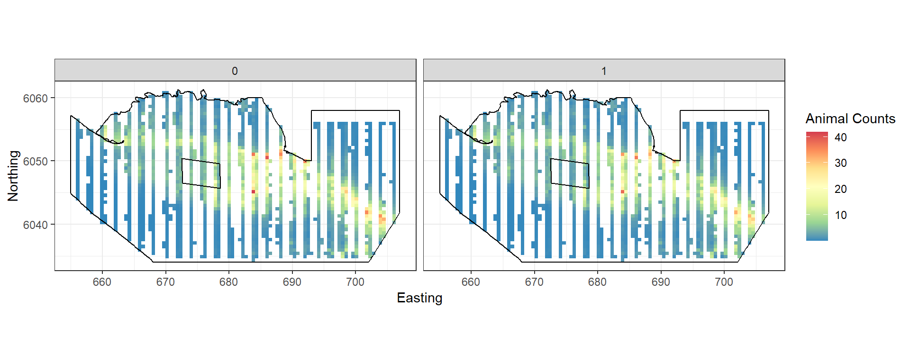
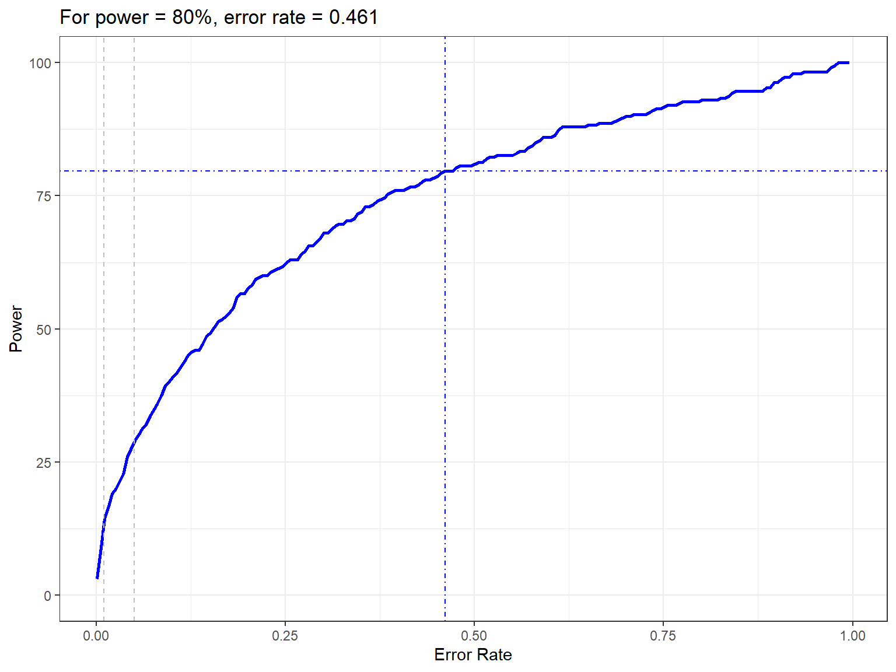
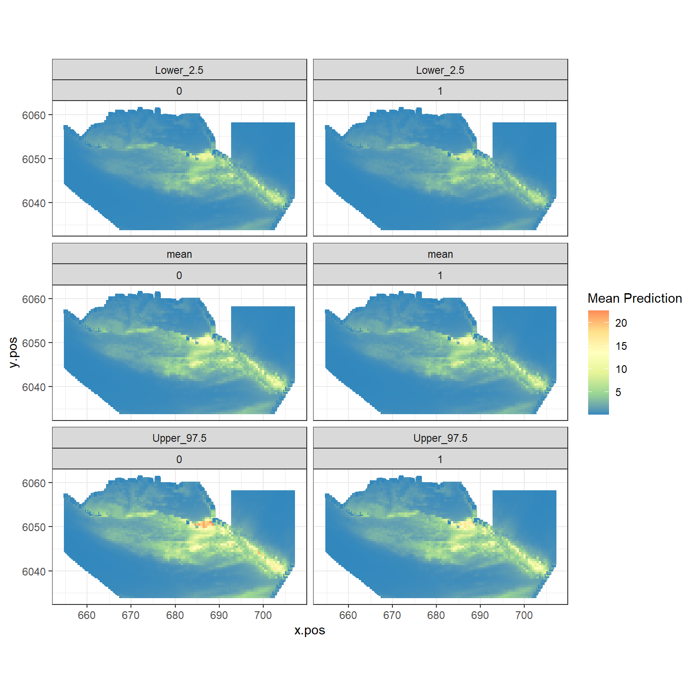
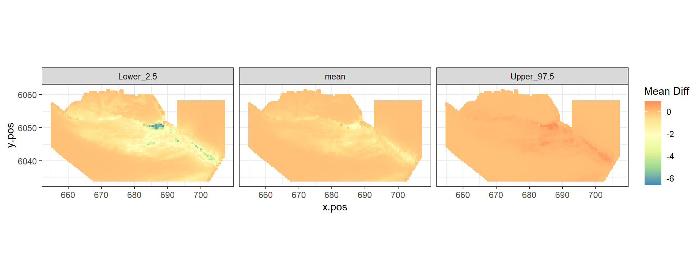
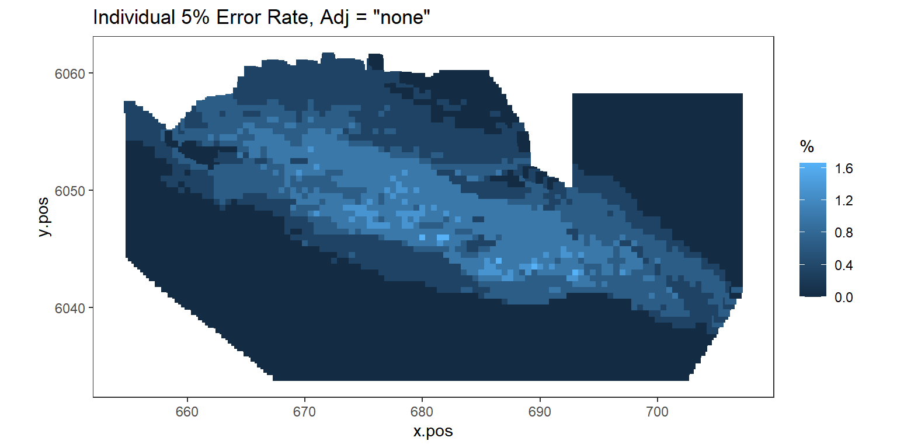

Introduction to MRSeaPower
LAS Scott-Hayward and ML Mackenzie
2025-03-13
IntroductiontoMRSeaPower.RmdPlease reference this document as: Scott-Hayward, L.A.S. and Mackenzie, M.L. (2017). Vignette for the MRSeaPower Package v2.0: Software for analysing the Power to Detect Change. Centre for Research into Ecological and Environmental Modelling, University of St Andrews.
This document gives an overview of the power analysis process alongside some outputs. The vignette “Using MRSeaPower” gives details on the analysis.
Power Analysis Process
The process for spatially explicit power is as follows:
- Fit a spatial model to baseline data using
MRSea.
- Decide on the kind of change you would like to impose (e.g. overall
decline or redistribution)
- Simulate new pre and post impact observation data (noisy data).
- Update the baseline model to include impact term.
- Using simulated data, run spatially explicit power analysis.
The following sections give more detail to each stage of this process.
1) Baseline Model
To use the functionality of this package, fit a gamMRSea
model using the MRSea
package to the baseline data.
If no baseline data is available, there are alternative methods (help files and functions are under development).
The figure below shows an example of 2 years of winter surveys in the Nysted region of Denmark.

Figure showing the survey effort and proposed windfarm site for the Nysted Windfarm.
The response data are counts of birds in a given area so we have a quasi-Poisson model with year-month, depth and coordinates.
2) Impose Change
The genChange function allows overall (site-wide)
changes, redistribution of animals from a polygon to the rest of the
surface and a combination of both. You can also provide your own surface
to simulate data from.
In this example, we’ll impose a 40% decline in birds in the footprint of the wind farm (plus 2km buffer) and a 10% decline elsewhere.

Figure showing the percentage change imposed for each grid cell.

Figure showing the mean count for the baseline (0) and post impact (1).
3) Simulate new observation data
We want to generate data that has the same characteristics as the
original data. Do do this we sample from the distribution used to model
the baseline using the generateNoise function from the
MRSea package. Distributions available are Gaussian,
Poisson, quasiPoisson, Binomial, zero-inflated binomial, Gamma and
Tweedie). This gives us the same mean-variance relationship observed
(assuming the baseline was modelled appropriately). This part is
possible at both the observed data locations and any location you can
predict to from your model.
The second component is the observed correlation. If we wish to
simulate new data using the original transect then we can use
getCorrelationMat to get the correlation matrix from the
baseline model. This gets the correlation for each panel defined. If you
want to use a different survey design, lifting data from the surface in
places not observed, then we can use the mean correlation seen in the
original model. Once the correlation is estimated or specified, the
function generateIC restructures the simulated data to
match the correlation specified.
4) Update baseline model
To prepare for the power analysis, we must update the baseline model
to use the new data (newdatcor.ny.imp), the
eventphase term and the panel structure for the new data
(twice as many panels).
nysim_glm<-update(bestModel, newdatcor.ny.imp[,1]~. + eventphase, data=impdata.ny)
nysim_glm$panels<-impdata.ny$TransectID5) Power analysis
The power analysis takes each of the simulated data sets and re-fits the spatial model (with impact term included). Predictions are made from these models to the whole study region. At the same time, models are fitted to data where no change has been imposed (the null models).
#> Code in parallelCreating Outputs...The power to detect the redistribution of birds in this example is 28.6666667.

Figure showing how the power to detect change varies with the error rate chosen. The first grey dashed line is at 1% and the second at 5%, traditionally values used as -value cutoffs. The blue dashed lines indicate the error rate required to get a power of 80%. The value is given in the title.

Figure showing the mean (middle), lower 2.5% (top) and upper 97.5% (bottom) of predicted animal counts before (left) and after (right) the event.

Figure showing the mean (middle), lower 2.5% (left) and upper 97.5% (right) of estimated differences between before and after the event. (difference = post - pre)

Figure showing, for every grid cell, the proportion of simulations that showed a significant difference.